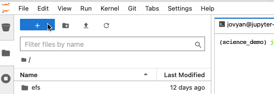
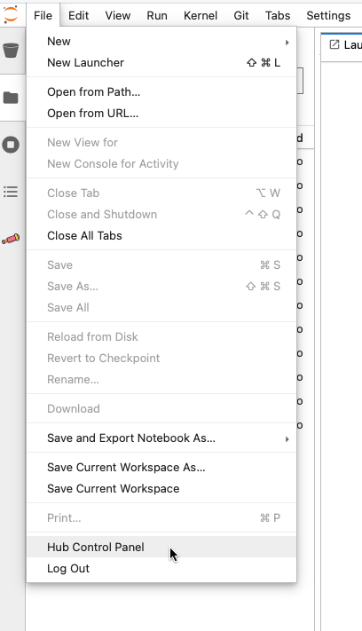
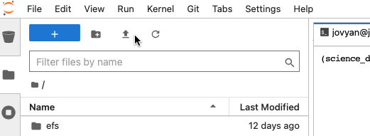
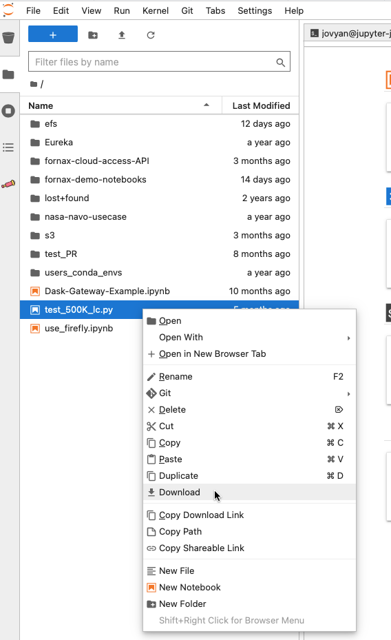

Fornax Science Console#
What is the Fornax Science Console?#
The Fornax Science Console is a NASA-funded web-based application that provides access to a limited amount of cloud computing via JupyterLab, which offers access to Jupyter Notebooks, Jupyter Console, and the terminal (command line). Users will need to register to login to the system, but usage is free. Once logged in, users will have access to data sets curated by repositories around the world, and can upload moderate amounts of private data. To get started quickly, users can choose from a variety of example Jupyter notebooks as well as pre-installed software environments. These can be modified to suit user needs.
The Fornax Science Console supports many astronomical use cases, but users will find it especially beneficial for analyses
on large cloud-hosted data sets that would be cumbersome to download;
that require complicated software pre-installed on the platform; or
that are parallelizable and require more compute than they currently have access to.
Fornax Science Console basic capabilities#
CPUs: Upon logging in, users will have access to 4 CPUs provided by AWS. These are useful for smaller analyses and to test out larger analyses. Once a user has completed testing and is ready to scale up an analysis, they can request up to 128 CPUs.
RAM: Upon logging in, users will have access to up to 16 GB of RAM. Up to 512 GB of RAM are available upon request.
User Storage: Upon logging in, users will have access to 10 GB of storage; additional storage is available upon request.
GPUs: There are currently no GPUs available.
Data access within the Fornax Science Console#
Users of the Fornax Science Console will have access to data curated and published by data repositories around the world.
AWS S3 buckets with data curated by the NASA Astrophysics Mission Archives (HEASARC, IRSA, MAST) are mounted under
s3/in the user’s$HOMEdirectory and are browsable as if they were on the local filesystem.Many data repositories provide data access through application program interfaces (APIs), which can be invoked by users of the Fornax Science Console through standard Python (e.g. astroquery, pyvo) or command line methods (e.g. wget, curl).
Users can upload a limited amount of datasets to AWS and interact with them as though they were on the local filesystem.
Software pre-installed on the Fornax Science Console#
Under construction: How can users get a list of pre-installed software without logging into the Fornax Science Console?
Quick Start Guide#
1. Get an account on the Fornax Science Console#
The platform is currently available by invitation only.
2. Log into the Fornax Science Console#
Once you have your login credentials, enter them at:
https://daskhub.fornaxdev.mysmce.com/
Choose a software container image: You will be given the option of choosing from a menu of software container images. Currently we offer to two images:
Astrophysics Default Image (most users should choose this)
High Energy Astrophysics Image
Choose a compute instance: You will be offered several options for the size of the compute. Please use
miniorstandardsize for writing, debugging, or testing code before switching to larger sizes for full runs of code at scale. Some of the options are marked as “Use with approval”. Please contact the person that invited you to the platform to obtain permission to use these instances.Click “Start”. In a few moments, you will find yourself in JupyterLab.
3. Start a new notebook.#
Click on the the blue
+in the upper left of the JupyterLab window to open the launcher, which will give you the option to open a Notebook or a Terminal. Choose the “science_demo” kernel under “Notebook”. This will open a new notebook that you can start coding in and run on the platform.

4. End your JupyterHub session.#
Before logging out, please shut down your server. This is an important step which insures the server you are using doesn’t keep running in the background, thereby wasting resources.
Go to the
FileMenu and click onhub control panelas in the below image, which will bring up the option tostop my server(in red). After stopping the server, pleaselogoutin the upper right of the JupyterHub window.
Starting & Monitoring Analyses#
How can I tell which computing resources are available on the Fornax Science Console?#
Generally you will have access to the CPU and RAM resources selected upon startup in Fornax. It is possible to query in a terminal window to find the amount of CPU or RAM, however, beware that these methods can show a larger amount of total RAM than is actually accessible to your server due to resource sharing between users.
In JupyterHub, open a terminal window, and use one of the below commands:
nprocwill give you the number of processorscat /proc/cpuinfowill give you more detailed info on the processorsfree -hwill give the amount of RAM available/usedcat /proc/meminfowill give more detailed info on the amount of RAM available/usedtopgives info on both CPU and RAM usage. Some numerical packages (e.g. numpy) use multithreading, so you may see that the CPU usage is more 100%. That means more than one CPU is used. You can see the individual CPU usage by pressing 1 while thetopcommand is running.
Under construction: It appears that sometimes we are allowed to use more CPU than listed for a short amount of time. Is this true? and what are the parameters of when and for what sizes that will be allowed?
How can I tell if I am close to using up my allocation of compute and storage resources?#
Under construction.
How will my analysis be affected by memory limitations?#
If your workload exceeds your server size, your server may be allowed to use additional resources temporarily. This can be convenient but should not be relied on. In particular, be aware that your job may be killed automatically and without warning if its RAM needs exceed the alloted memory. This behavior is not specific to Fornax or AWS, but users may encounter it more often on the science console due to the flexible machine sizing options. (Your laptop needs to have the max amount of memory that you will ever use while working on it. On the science console, you can choose a different server size every time you start it up – this is much more efficient, but also requires you to be more aware of how much CPU and RAM your tasks need.)
What is a kernel and how do I choose one?#
Under Construction: In Jupyter, kernels are the background processes that execute cells and return results for display. To select the kernel on which you want to run your Notebook, go to the Kernel menu and choose Change Kernel. You can also click directly on the name of the active kernel to switch to another one. The bottom of the JupyterLab window lists the github branch as well as the name of the kernel in use. The kernel is listed as either ‘idle’ or ‘busy’, which is useful to know if your kernel is working or has crashed.
Does work persist between sessions?#
Files in your home directory will persist between sessions.
pip installs will persist across kernel restarts, but not across logging out and back in.
If you want software installs to be persistent, consider setting up an environment: See below under “Making a conda environment that persists across sessions”
Save your work!#
The Science Console is primarily intended for interactive use and will cull sessions which appear to be inactive. Archive calls appear to Fornax as periods of inactivity (we see the irony in this too!), so might lead to your session being dropped from Fornax.
If you want a notebook or script to run for longer than about 60 minutes and you will not be interacting with the Console, running top during that time can help keep the session active.
Under construction: how long is the period of inactivity that gets culled?
How can I save my notebook as a Python script?#
from the command line:
jupyter nbconvert --to script notebookname.ipynb
How can I run a notebook non-interactively?#
Under Construction.
Data Management#
How can I upload my own data for use with compute provided by the Fornax Science Console?#
The uparrow in the upper left allows you to upload data. If it is a large amount of data, consider creating a zip or tar archive first. From within JupyterLab, you can also use a terminal to transfer data with the usual methods (scp, wget, curl should all work). The current (Feb 2024) default storage limit for uploaded data is 10GB (Feb 2024). When you log into the science console for the first time, the active directory is your $HOME directory. It contains preexisting folders like efs/ and s3/ with shared data. You may also create your own directories and files here. Your edits outside of the shared folders are not visible to other users.

How can I access data that has been hosted on the cloud by the Fornax archives?#
Is there a way access data in a Box account from the Fornax Science Console?#
Any publicly accessible web service can be reached from Fornax through the HTTPS protocol, e.g., APIs, wget, etc.
Is there a way to access data from an AWS bucket?#
Any publicly available bucket is visible from Fornax as it would be on your laptop. If you require an access key to see into the bucket from your laptop, you will also need that on Fornax.
How can I open a plot (e.g. png, pdf) that I generated in a notebook or uploaded?#
Double-clicking on a png or PDF in the file browser will open it in a new tab.
How do I download data from the Fornax Science Console to my local machine?#
If it is a large amount of data, consider creating a zip or tar archive first. If it is a small file, you can right click on the file name in the file browser and scroll to Download.

Managing Software#
How can I get a list of what software is pre-installed on the Fornax Science Console?#
Software is installed in Miniconda environments. You can use “conda list” from a Terminal within the Fornax Science Console to list the contents of each environment.
Can I install my own software on the Fornax Science Console?#
Persistent User-Installed Software
If the pre-installed environments don’t have the software you need, you can create your own persistent environment available across multiple sessions. Follow the instructions in the conda documentation, specifically managing environments.
Non-persistent User-Installed Software
You can !pip install your favorite software from inside a notebook. This installed software will persist through kernel restarts, but will not be persistent if you stop your server and restart it (logging out and back in) unless you specify the - - user option, which will put the software in your home directory. Note that an install done in one compute environment may or may not work in a container opened using another environment, even if the directory is still there. Conda environments are useful to manage these.
For the tutorial notebooks we tend to have a requirements.txt file in the repo which lists all the software dependencies. Then the first line in the notebook is
!pip install -r requirements.txtThat way other people can run the notebook and will know which software is involved.
There is a limit on the space a user has access to, but not the number of packages, and packages are usually small.
What is the terminal command to list package version info using pip?#
pip show package-name
Is it possible to bring my own docker image?#
This is not currently possible.
Is it possible to do code development in emacs or vi or some other IDE?#
Emacs or vi is possible from the terminal.
The JupyterLab interface also has its own editor.
If you prefer to develop elsewhere, you can push your changes to a publicly available repo (e.g., GitHub) and synchronize that to a location on your home directory on Fornax.
Will notebooks that run on Fornax also work on my laptop?#
In general, yes, but you need to have a Python environment setup in the same way as on it is on Fornax.
See below under “Can I run the container from Fornax on my own personal computer/laptop?”
Is it possible to launch apps from icons? Like MOPEX or SPICE#
These apps are unavailable in Fornax
Is it possible to run licensed software (IDL) in Fornax?#
licensed software is not possible in Fornax
Is it possible to run the container from Fornax on my own personal computer/laptop?#
Yes. The images are all on the AWS Elastic Container Registry.
Under Construction: Need a link and more instructions
Examples and Tutorials#
Fully worked science use cases#
Cloud#
Optimizing code for CPU usage (CPU profiling)#
profiling within Fornax is possible, however visualizing the profile is not yet possible
profiling needs to be done on a .py script, and not a Jupyter notebook
sample command on the Fornax command line:
python -m cProfile -o output_profile_name.prof code_name.pyThen download the .prof file
On your local computer command line:
python -m snakeviz output_profile_name.profdocumentation for SnakeViz: https://jiffyclub.github.io/snakeviz/
This really only looks at CPU usage
Optimizing code for memory usage (memory profiling)#
inside the notebook:
pip install -U memory_profilerfrom memory_profiler import profileabove the function you want to check add this line: @profile
run the script: python -m memory_profiler
.py > mem_prof.txt
Optimizing code for multiple CPUs with parallelization#
Python built in multiprocessing
Our scale up notebook is a tutorial on parallelization of generating multiwavelength light curves with tools, tips, and suggestions relevant to many tasks.
MAST science examples#
HEASARC sciserver_cookbooks#
Cross matching two large catalogs#
Work with theoretical catalogs#
How can I contribute to existing Open-Source Fornax notebook tutorials?#
open issue or PR on Fornax Github repo
Troubleshooting#
If my internet connection goes away or is intermittent - what happens to the running notebook?
Restart kernel will solve some problems, especially if the cells were run out of order
Under the
kernelmenu:restart kernel...
Restart Fornax - will solve version issues if packages with different versions were loaded since these won’t persist across Fornax restarts
Getting Help#
ask your peers: User forum at #fornax-users slack channel
ask Fornax Helpdesk
email fornax-helpdesk@lists.nasa.gov
If you are reporting a problem or suspected bug, please include as much of the following information as possible. This will help minimize the time it takes for us to diagnose the problem and get you an answer.
- date and time (with timezone) the problem occurred - web browser (name and version) you are using to connect to the Fornax Science Console (e.g., Chrome 125.0.64422.142) - where in the Fornax Science Console this happened (e.g., while running a notebook in JupyterHub; while using the S3 bucket menu; etc.) - what you were doing when the problem occurred - what you expected to have happen - what happened instead - include any errors messages or info that were produced - please include any additional information you feel is relevant (e.g., successfully did this same thing previously on date NN at time NN and it worked then) - if you have logs or a traceback, please include them
Parallel and Distributed Processing#
Since one of the main drivers for using Fornax is the advantage of multiple CPUs, we provide here additional information on how to efficiently use those CPUs.
Terminology#
CPU:
Central Processing Unit. Quality and number of CPU determines compute power – the rate at which computations can be performed.
Node
A single machine within a network of machines used for distributed processing.
Parallel or Distributed Processing
Parallel: Running >1 process/job concurrently. Distributed: Running a set of processes/jobs by farming them out to a network of compute nodes; Many of these jobs may run in parallel. (Distinction between parallel and distributed and is not deeply important here.)
RAM
Working memory in a machine, node, or network. Amount of RAM determines how much data can be loaded in-memory simultaneously.
Worker
An entity that completes a chunk of work (data + instructions). It runs in the background and must be managed using (e.g.,) python
multiprocessingor Dask.
When should I use distributed or parallel processing?#
Your dataset is very large, but could be split into subsets that can be processed individually.
The forced photometry notebook is an example of this. It gathers a large number of images and then processes them all using the same piece of code (photometry extraction). The pipeline is parallelized by running workers that execute the same code on different images.
Your computations/operations take a long time, but can be split into subsets that are independent from each other (the input to one does not depend on the output of another).
The light curve generator notebook is an example of this. It gathers a sample of objects and then runs several, independent pieces of code (calls to different archives to retrieve light curves) on the full sample. The pipeline is parallelized by running workers that execute different pieces of code on the same object sample.
Distributed processing with Dask DataFrames – basic concepts#
Dask:
Dask is a python library to manage parallel and distributed computing. Its responsibilities include:
Farm out chunks of work (data + instructions) to be completed in the background.
Manage the workers, the memory usage, etc.
Collect and consolidate worker results and return them to the user.
Pandas DataFrames:
There is no inherent size limit for a Pandas DataFrame other than the amount of RAM available.
Some operations that are trivial on a small-ish DataFrame (e.g., sorting) become costly when the DataFrame is large. In addition to DataFrame size, an essential factor will be the quality and number of CPU.
Dask DataFrame:
You can think of this as a wrapper for Pandas DataFrames:
Pandas handles the actual data (in memory) and most of the computations. Each worker uses it’s own Pandas DataFrame.
Dask orchestrates the process. It tells each worker which chunk of the full dataset (which is not in memory) to use, and which Pandas operations to execute.
The user gives instructions to Dask (by calling Dask methods), not to Pandas.
There are Dask-equivalents of many Pandas methods, though they sometimes behave differently due to the need to handle very large datasets or datasets that are not in-memory.
Performance implications to be aware of:
The Dask DataFrame index can make a big difference in efficiency. For large datasets, it can be highly advantageous to determine the “right” index (based on the desired chunking and/or computations). Set and sort the index before performing the computations, and don’t change it later on unless really necessary.
(others?)
Additional Resources#
New to Python? -
Fornax is the collaboration of three NASA archives